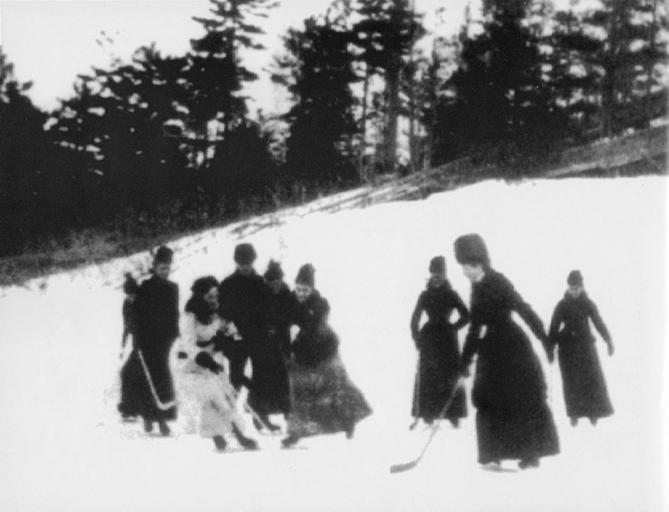

Introduction
Women's hockey has an extremely long history, dating back to the late nineteenth century. Despite facing social barriers and limited opportunities, women formed teams and leagues that helpedthe sport grow across Canada. This page expores the early development of women's hockey and the challenges the players faced as they fought not only for recognition in the sport, but for the right to play at all.
The First Games
Althought there was dispute about when and where the first organized game of all-women's hockey was played, historians generally agree that it was in the early 1890s. Some sources state that it was first played in Ottawa in 1891, organized by Lady Isobel Stanley, daughter of Governer General Lord Stanley (IIHF, n.d.). Others say the first game wasn't until 1892 in Barrie.
Regardless of the exact location the game was played, women's hockey began gaining popularity quickly. Photographs from this time show women playing hockey, demonstrating the rapidly increasing visibility of the sport in Canada. Participation continued to grow as women began playing in a more structured manner, such as for their universities and, eventually, regional leagues.
Organized Women's Hockey at Universities
As women continued to play hockey, the sport became increasingly organized. One of the first women's club teams was formed at Queen's University in Kingston Ontario, known as the Love-me-Littles, a name that reflected the lack of support from men in the community. A few years later, the team changed its name to the Morning Glories.
By the 1920s, women's hockey had spread throughout Québec, Ontario, and the Maritimes as more universities won teams. By 1921 the game was popular enough to hold national championships, with the University of Toronto winning the first title, demonstrating the growing popularity of the sport (IIHF, n.d.).
Early Organized Leagues
Outside of universities, women's hockey was also growing rapidly, with several leagues forming across Canada. During the first World War, the sport's popularity increased even further due to a lack of men's talent. One of the most notable leagues was the Eastern Ladies Hockey League, also known as La Ligue due Hockey des Dames de Montréal, which was the first women's league to gain widespread public attention. The league regularly sold out arenas with a capacity of approximately 3,200 spectators, demonstrating both popularity and financial success. However, the league did not last long, as men returned home at the end of the war and started playing again themselves (Yaccato, 2015).
Women's hockey reached another peak in the 1920s, through to 1940 with the introduction of the Ladies Ontario Hockey League and the eventual success of the Preston Rivulettes in 1931, led by star player Hilda Ranscombe. The team dominated the sport during this period, but once again the game had to fold due to the second World War. Unfortunately, it would take several decades (Freeborn, 2021).
Women's Hockey Comes Back with Challenges
Through the mid-1950s, many women were discouraged from playing hockey due to strict gender roles that deemed the sport as inappropriate for girls. Opportunities for girls and women to play were limited, and in many communities there were no organized leagues available for girls.
In 1956, one young player challenged these barriers. Abby Hoffman cut her hair, changed her name to "Ab", and disguised herself as a boy so she could join a local boys' league in Toronto since no girls' teams existed in her area. When the league discovered she was a girl, she was removed from the team despite widespread media attention and support from several NHL teams. (Government of Canada, 2025).
Leagues Continue to Form and Modern Stars Emerge
In the 1960s, collegiate women's hockey began to re-emerge. The Women's Intercollegiate Athletic Union and the Ontario-Quebec University Athletic Association merged to fomr the Ontario Women's Interuniversity Athletic Association. At first, the organization operated as an intramural league, meaning teams mainly played within their own universities, though some exhibition games we held. By the 1961-62 season, the league expanded to intercollegiate competition, allowing teams from different universities to compete against one another.
During this period, additional organizations such as the Central Ontario Women's Hockey League were also established. These leagues helped rebuild the structure of women's hockey after decades of limited opportunities and laid the groundwork for future stars such as Angela James, who played for Seneca College in the Ontario Colleges Athletic Association and was eventually one of the first two women selected for induction to the Hockey Hall of Fame. Additionally, the dominance of these leagues contributed to the sport's continued growth both in Canada and internationally. (HHOF, n.d.)